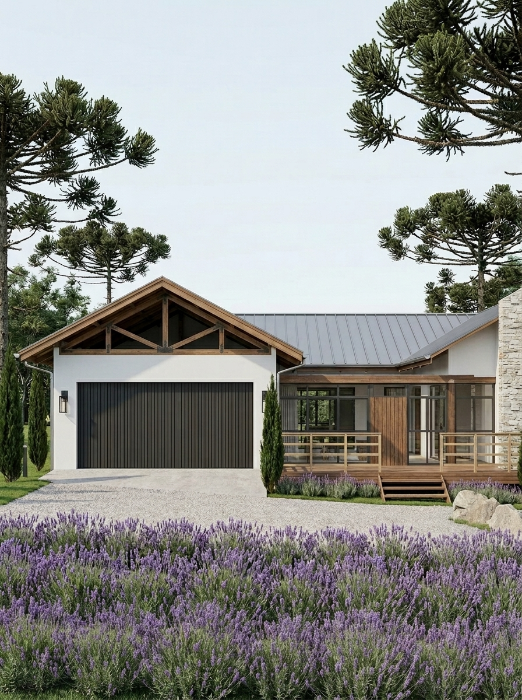
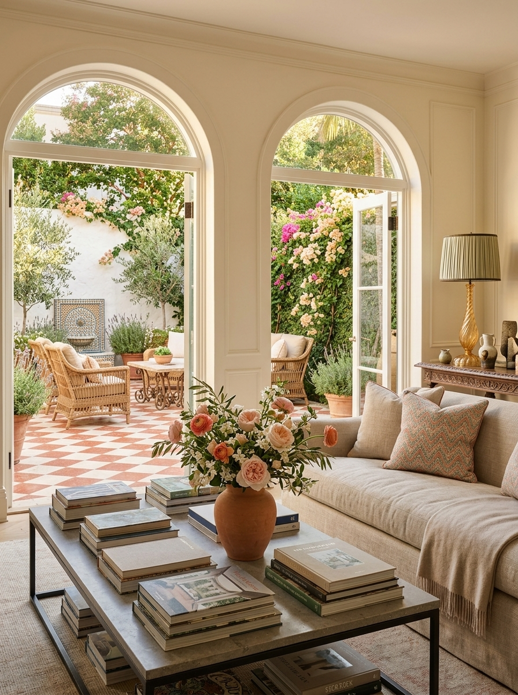

Fachadas
Fachadas planejadas para valorizar o imovel, organizar a primeira impressao e criar uma leitura arquitetonica coerente com o que existe dentro.
01 - Rua
A primeira impressao tambem e projeto
A fachada precisa conversar com rua, terreno, aberturas e privacidade. O estudo define o que mostrar, o que proteger e como criar presenca sem pesar o conjunto.


02 - Volumetria
Mais presenca, menos improviso
Volumes bem definidos criam leitura mesmo antes dos acabamentos. Cheios, vazios, planos e profundidades organizam a imagem e evitam uma frente fragmentada.

03 - Materiais
Materiais que valorizam com o tempo
Cada material externo precisa considerar sol, chuva, manutencao e durabilidade. A beleza da fachada depende tanto da combinacao visual quanto da permanencia.
04 - Percurso
Chegada clara e acolhedora
Portao, caminho, porta, jardim e luz orientam a chegada. Quando esse percurso e claro, a casa parece mais acolhedora e a entrada ganha intencao.
05 - Entorno
Arquitetura em relacao ao entorno
Paisagismo, muros, calçada e vizinhanca interferem na leitura final. A fachada precisa se destacar sem ignorar o contexto onde ela esta inserida.

Vamos valorizar a primeira impressao do seu imovel?
Se voce quer uma fachada mais clara, mais forte ou mais integrada ao terreno, o primeiro passo e entender o potencial do que ja existe.
Falar no WhatsApp